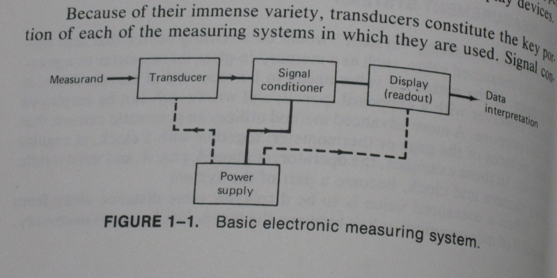

July 12, 2011(rev. July 13, 2011)
Name of the lab.
"Introduction to
transducers and computer interfacing"
The old lab one was called "Transducers and Computer Interfacing". This
lab used to contain a variety of different transducers but I think that
has been all moved into the new lab 10.
Harry N. Norton points out in
Handbook of Transducers
that
"A transducer is a sensor, but a
sensor is not necessarily a transducer!".
The force probe used in this lab is an example of a sensor that is more
than just a transducer. Buried within the black box of this sensor
there is a strain gauge (the transducer), bridge circuit and an
instrumentation amplifier. I suggest then that this lab contains
an
introduction to the use of sensors rather than transducers. These
components of the sensor are elaborated on in later labs.
I'd suggest talking at
least a little about Analog to Digital Conversion since it is essential
for
computer interfacing to analog sensors . Within the computer
everything is digital and
in the world outside the computer phenomena are analog.
[added July 13, 2011] I have noticed that there
is a discussion of precision in lab 2. I'd suggest moving that to lab1
and expanding it with the concept of resolution of an Analog to Digital
conversion. see CommentsOnNewLabTwoDocument.html#precision
The following image from
Digital Systems Principles and
Applications
9th ed by Ronald Tocci

I don't think they need to be told how an ADC
works but I do think they should be told it is there!. The LabQuest
Mini does a 12 bit conversion. Knowing this one can work out how big
the quantization levels are and can explain why amplification is some
times needed. See
../../EvaluationLabPro.html#quantization_noise
| "There are many
commercialy available computer-sensor interfaces and in this course we
will be
using the educational-based Logger Pro interface developed by Vernier. Though not as powerful or versatile as an
industrial interface such as LabVIEW produced by National Instruments,
Logger
Pro is much easier to use and allows “plug and play” simplicity in its
operation and data collection." |
It is very unlikely the students will be using a LabQuest Mini in their
working lives since it is a device designed specifically for
educational use; however, the
Lab Quest mini contains the same
essential building blocks that exist in all digital electronic
instrumentation. I think this is important to the students and
should be pointed out. Most of them will never see LabView either so it
is hardly worth even mentioning here. Paul R. made a point of
mentioning in the May 12 meeting that Labview is not something being
used in his industry.
I think the point that needs to be made here,
a point that makes
this lab a whole lot more relevant to students is that, the instruments
that the students will use in there working lives will virtually all
have a computer
embedded within them just like other items they use all the time
like cell phones, MP3 players, digial camera's and even their cars.
These embedded computers (microcontrollers)
are
all
interfaced to the real world. Some
of the devices also contain a digital interface that allows the device
to connect to a personal computer.
I think it would be very instructive point out that this sensor to
computer interface actually contains functional blocks that are also
present in instruments that they will use.
July 11, 2011
Since this lab is being reworked I thought I'd
comment on some bits.
So, what is needed in
these cases is something the converts the thing we’re trying to measure
into a voltage. These are collectively called
“transducers.” There are different transducers for different
types of measurements. Some examples are the following:
For light, a solar cell or a photo resistor is a transducer (converts
light into a voltage).
For heat, a thermistor or a thermocouple is a transducer (converts
temperature into voltages).
For force, a strain gauge is a transducer (converts force into a
voltage).
For time, a photogate sensor is a transducer (converts the
blockage of the gate into a change of voltage that can then be timed by
the computer’s internal clock).
For sound, a microphone is a transducer (converts sound waves into
voltages).
For speed/motion, a motion sensor (more specifically, a radar
signal/sensor) is a transducer (converts speed of a moving object into
a voltage).
|
"...into a voltage"
I'd say the transducer converts the physical quantity
that is being measured into an electrical quantity. This could be
voltage, current or resistance. Some signal conditioning is often
required to convert this electrical quantity to a voltage in the range
that the Analog to Digital Converter can handle effectively.
From Handbook of Transducers by Harry N. Norton (book is in the
prep room)
"The transducer, which converts
the measureand into a usable electrical output."
Photogate
Don't expect the envi2307 students to be familiar with
photogates. We use them in physics 1100 and phys1101/1120 and in the
old envi2307 we used them because there are here. Since we had them
already they were convenient to use. We did not intend to purchase more
photogates for Langley. The transducer within the newer pasco
photogates is a photo IC with a photodiode, amplifier and schmitt
trigger.
The transducer itself in the newer photogate heads is actually a photo
diode. It converts light to a tiny current.
I think a convenient device for us to use as a substitute that
is both
less expensive and would better serve our needs is a demonstration
board from microchip that contains a photo diode and amplifier circuit
on a small inexpensive demonstration board. see ../../photodiode.html.
Perhaps from a physics 1100 and phys1101/1120 point of view the
potogate is being used for a time measurement. From a transducer
point
of
view light is being converted into an electric signal only. The
time
measurement
is
not made in the photogate head at all.
Since we are talking about transducers and not getting velocity
information in ENVI2307 this is an important distinction.
Microphone
"converts sound waves into voltages" does not meaningfully convey what is happening.
When you are
talking about force magnitude, static pressure, temperature and light
intensity there is a one to one correspondence between what can be
easily treated as a scalar
phenomena and a transducer electrical property (resistance, voltage
or current). Saying "voltages" I suppose implies there is more
than just a scalar value involved but it is being used as a vague term
here that does not convey anything concrete.
The time varying voltage from the microphone is more like a
continuous voltage function of time than like a series of voltages.
If the sound hitting the microphone is a "pure tone" the
voltage function of time will be a sinusoid. Most
sounds we hear are periodic but more arbitrary in wave shape. To
represent sounds in a computer or any digital system voltage levels
are quantized by an analog to digital converter which must sample
the actual voltage at discrete time intervals. After sampling
one can refer to a series of voltages but the actual voltage signal is
continuous. Sampling itself has nothing to do with the
microphone.
A microphone converts tiny changes in
pressure to electrical deviations. The
microphone
that
we
typically
use in the lab has a membrane with
fixed embedded electric charge. As the pressure in front of the
membrane increases the membrane is deflected towards the gate of a
field effect transistor. As the electric field changes at the gate of
the transistor the current from drain to source also changes. The
microphone is connected to a resistor. As the drain current changes the
voltage across the resistor also changes. When the pressure in front of
the membrane falls the currents and voltages also change in the reverse
direction.

A microphone is the one sensor we have been
using that I have not yet tested with the new LabQuest Mini or Labpro
systems. Aliasing would be expected to be an issue with sound. Some
discussion of aliasing down below on this page
#aliasing
The following statement really misses and skips
important concepts:
"
For speed/motion, a
motion sensor (more
specifically, a radar signal/sensor) is a transducer (converts speed of
a moving object into a voltage)"
The problem with this statement is that at the
top of the list it is stated that a list of transducers follows. The
first three lines are examples of transducers as stated.
This is an
example of a sensor and really does not belong in a list of transducers!
See
Handbook of Transducers by Harry N. Norton (book is in the
prep room):
from page 17
and from page 2 of the same book

The book is somewhat dated (1989) in this
representation but I think it does make it clear that a "radar sensor"
is not a transducer. A radar gun is a measurement system and if it is
part of a larger system it could be considered a sensor. The transducer
on the other hand would be a microwave antenna / simple wire pickup in
a short waveguide.
It is an old book although there is a lot of good information in it.
Today most electronic measuring systems are digital and after the
"Signal Conditioner" block there is a Digital to Analog Converter block
and a local microcontroller or microprocessor system. Microcontrollers
are really inexpensive these days and they add a lot of functionality
for very little cost. The cost was very high in the 1980's.
The following image from Digital Systems Principles and Applications
9th ed by Ronald Tocci
Well diagram is missing the signal conditioning and the possible
interface to other digital or computer equipment
In the following example
- the strain gauge is the transducer
- the bridge, instrumentation amplifier and low pass filter
are the signal conditioning
- The LabPro contains the Analog to Digital converter and a
digital interface to a computer (the USB). -- it also contains an
embedded computer